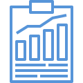

Bordereau de suivi de déchets
SetTIC vous délivre à chaque collecte un Bordereau de Suivi de Déchets (BSD). Il est la preuve de la prise en charge de vos DEEE par SetTIC et assure une traçabilité de l’opération.

Reporting Annuel et Certificat de Recyclage
Un reporting vous sera fourni de façon annuelle pour faire un récapitulatif de l’ensemble des DEEE pris en charge par SetTIC au cours de la période concernée. De plus, un certificat de recyclage vous sera transmis à l’issu du processus de traitement.